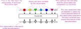

Observables
Bonsai makes use of a unified model for asynchronous data streams: the observable sequence. This model was introduced by the popular ReactiveX framework. Our favorite approach to explain what exactly is an observable sequence is to use a metaphor.
A metaphor for asynchronous computation
Think about your favorite social networking service, and how your personal account works within that service. There are usually two main actions you have available:
- Post text messages or share content such as pictures or videos.
- Follow other accounts so that you get notified whenever they send out their own messages. Very often users will post new messages in reaction to other posts they have just seen.
Social network accounts can also be terminated. The user can naturally close her own account, indicating there will be no more future posts, or the account can be terminated exceptionally by a moderator, perhaps due to a breach in the terms of service.
Now imagine you had a webcam with its own user account in the social network. From time to time, the camera would take a picture and post it on the network. Other accounts would now be able to "follow" the camera in order to react whenever it posts a new image. Some of these followers might repost the camera images, either in their original form or with modifications (e.g., a grayscale or colorizing filter).
Other devices could have their own accounts, such as keyboards, microphones or temperature sensors. In this case, some users might follow both the camera and the keyboard, and start to aggregate posts by whether they happened close in time. For example, one user might repost an image from the camera only after the keyboard sent out a key press notification.
Observable sequences are asynchronous sequences of data which behave in exactly this way. They are sources of data which can be "followed", or rather subscribed to, so that its observers get notified whenever there are new items available in the sequence. Observable sequences can generate items spontaneously or in reaction to notifications from other sequences they are subscribing.
Observable sequences can also terminate naturally when there is no more data to send out, or exceptionally, if there is an error with the device or during data processing.
The Bonsai visual language
The Bonsai programming language manipulates such reactive networks explicitly using workflow diagrams where observable sequences are represented graphically as colored nodes. Nodes can be connected to other nodes, from left to right, indicating that the rightmost node subscribes to the notifications of the leftmost node.
By chaining networks of observable sequences in this way, it becomes possible to express very complex interactive systems in a surprisingly compact format. For example, the workflow diagram above describes a system that saves a grayscale snapshot from a camera into a file whenever there is a key press.
Marble diagrams
To understand how this example works we need to know not only the network of connections -- who follows who -- but also the rules used by each operator to generate new items. In order to analyse the behaviour and dynamics of individual operators, we use a different representation called a marble diagram.
Marble diagrams allow you to describe not only what items are emitted by observable sequences, but also when they are emitted. The Grayscale operator is used below to describe the main components of marble diagrams.

Arrows entering the box indicate that the operator is receiving notifications from the observable sequence that it is subscribing to, or "following". Arrows leaving the box show items that are emitted by the operator itself.
The diagram shows that the Grayscale operator is reacting to each of the input notifications by sending out new images where all color information has been removed. This is an example of an operator which simply transforms incoming values into a different form. However, there are other operators like Sample which can have slightly more interesting marble diagrams.

We can see from the workflow diagram above that the Sample operator subscribes to two sequences: Grayscale and KeyDown. The marble diagram shows an hypothetical example of these two independent streams. Grayscale is sending out images periodically, following the camera. However, KeyDown sends out a notification only when there is a key press, which can happen at any moment, even in between camera images.
The diagram makes clear the behaviour of Sample: it sends out the latest image that was received from Grayscale whenever there was a new key press. Marble diagrams are a useful tool to convey graphically the intuition of what a reactive operator is doing and will be used extensively throughout these pages.
Hot versus cold observable sequences
Some of the most subtle, but very important, aspects of the behaviour of observable sequences are the effects of subscription. When an image processing operator subscribes to a sequence of frames from a camera, that camera is turned on and acquisition is started. When the same operator subscribes to a sequence of frames from a video file, that file is opened and frames begin to be decoded into memory. These and other subscription side effects are necessary in order to generate the data items emitted from a sequence.
The effects of subscription can have very different implications on the behaviour of reactive operators, depending on the nature of the underlying observable sequence. Consider again the difference between a video camera and a video file.
A video camera generates a live broadcast of images. If an operator subscribes to the camera at any one time, it will get the images that are being captured by the camera at that time. If another operator subscribes to the camera at a later time, it will not receive the same images that the first operator received. When observable sequences have this fire-and-forget behaviour, they are said to be hot.
A video file also generates a sequence of images, but in contrast to the camera, these images are generated on-demand. They are permanently stored on disk, and whenever an operator subscribes to the file, all the images can be played back from the beginning. Every operator will receive all the frames from the file, no matter when they subscribe to the sequence. When observable sequences have this on-demand behaviour, they are said to be cold.
Understanding the temperature of an observable sequence is particularly important when that sequence is shared between multiple operators. It can help to understand whether those operators will see the same data items, and what the effects of subscribing to the shared sequence at different times are going to be.
It is also possible to change the temperature of observable sequences using reactive operators. One operator can subscribe to the camera and start recording all incoming images. It can then replay all images on-demand to every downstream operator, even if they subscribe late. The originally hot sequence has been turned into a cold observable by this replay behaviour.
Conversely, another operator can subscribe to a video file and start posting all the images to downstream operators. However, when other operators subscribe to it, instead of requesting a new subscription to the video, it simply starts to share the images coming from the original subscription, at whatever point of the video it is in. The originally cold sequence has been turned into a hot observable by this sharing, or publishing, behaviour.
In the Bonsai visual language, whenever two operators receive data from the same source, i.e. whenever there are branches in the workflow, subscriptions are shared by default. This means that the default sharing behaviour of Bonsai sequences is hot by default. It is possible to change this by using specialized sharing operators, called Subjects.